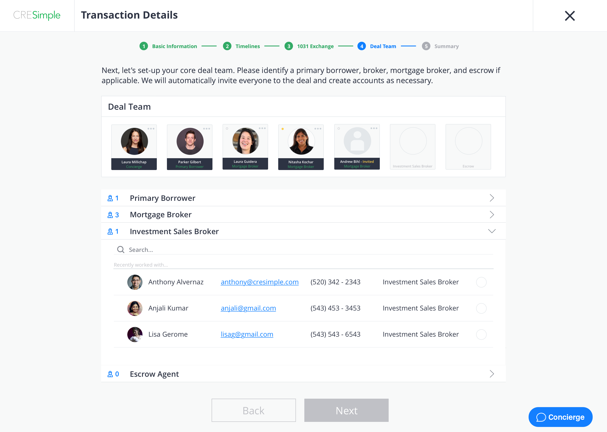
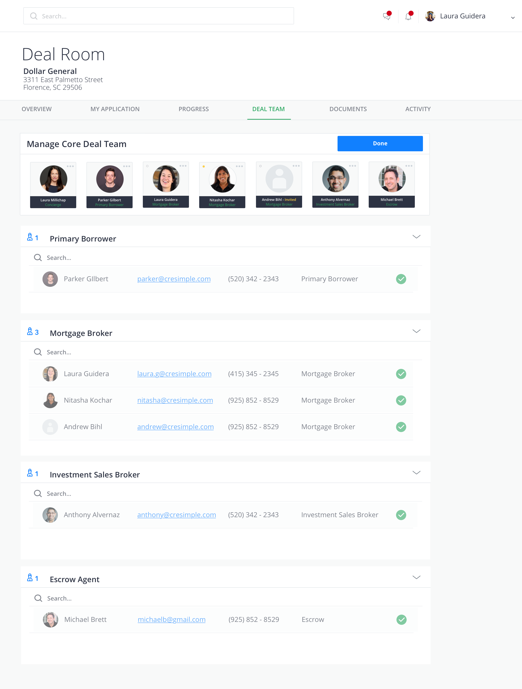
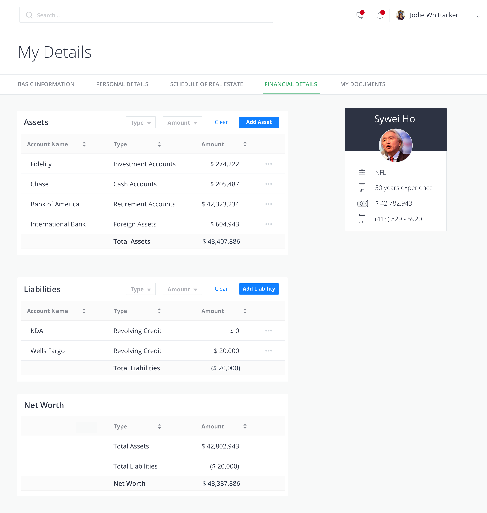

This past summer I interned at CRE Simple Technologies, a commercial real estate fin-tech company in Oakland, California. During my time there, I wore many hats and had the opportunity to expand upon my knowledge of UX/UI design, product management, and marketing.
Disclaimer: prior to this internship I knew absolutely nothing about the commercial real estate industry. During my first week, my manager explained it to me using a very detailed visual.

UX/UI Design
Transaction Details
A significant part of my internship focused on UX/UI design. Specifically, I worked on the Deal Team Management workflow, which is a process used by mortgage brokers when they create a deal on the platform, specifically located in the Transaction Details section of their loan application. Deal team creation is an extremely important step in the deal set-up process because it is where security and account access parameters are defined. As a user, you don’t have access to other users on the platform if you haven’t worked with them before. So when you work with someone for the first time, you have to add in all of their information as if you are “inviting” them to the platform as a new user.
The first, hasty implementation of this page solely consisted of three dropdown search bars for the Mortgage Broker, Borrower, and Escrow roles, respectively. My redesign abides by the platform’s anonymity policy and constraints, while allowing the user to seamlessly arrange their deal team in a matter of seconds. In each drop down, the user can search for and add all of the necessary people in that role by either typing a name in the search bar in the given section or by tapping on the circle next to the user’s name. At the top of the screen, the user can see each member they’ve already added in the form of a card. If the user needs to remove someone, they can click on the three-dot “more” button. Once the user has assigned each of the primary roles, they are allowed to move on to the summary page.
Manage Deal Team
Once the user completes their initial deal team setup, they are allowed to edit their deal team in a different view, ‘Manage Deal Team’. Here, the layout appeals to the user’s memory as it is mimics the layout the user had seen when they originally created their deal team. Since the user can only remove people in the top section, but can search and add users in each of the role assignment dropdowns, the dropdown selections are grayed out.
Personal Details
Currently, the platform uses form summary views for each section in the 'My Details' profile for each user. However, since every part of the platform should add value to the user, I took the initiative to redesign the financial details page so that it calculates one's net worth rather than simply listing out the various assets and liabilities a user has. Now, users can directly add assets and liabilites to this page and watch their net worth change as a result.
Marketing
I spearheaded a formal marketing campaign with the Operations team toward the latter part of my internship and designed the ‘Tenant List’ and ‘Recently Funded Purchase’ templates. Throughout the process, I had immense design flexibility and was able to incorporate elements of “delight” that didn't necessarily exist on the platform at the time. I’ve continued to work on marketing material into the fall of my senior year!
View Other Projects